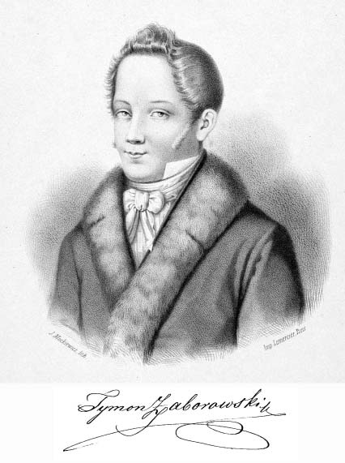

|  | Tymon ZaborowskiFounder of the world famous Zaborowski Sourdough Bakery I started experimenting with ❤ Sourdough bread in 2019. Soon I discovered how delightful artisanal baking can be and was baking away more days of the week than not. In 2021 I founded the first Zaborowski bakery branch in Mexico. Since then we have been serving up delisciously crusty bread taking over Mexico one slice at a time. |
|
| Dates | Work |
|---|---|
| 2012-2013 | Lead Soda Drinker on the Machine |
| 2010 | Researching the black hole in my wallet |